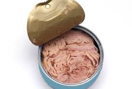

Atun
Es un pescado azul que nos aporta unos 21,5 gramos de proteína por cada 100 gramos. Es otra muy buena fuente de omega-3 además, es rico en vitaminas liposolubles como la A y la D.
En esta ocacion nos desviaremos un poco de las recetas para encontrar nuevas fuentes de proteinas, ya que sabemos que es algo esencial para una buena salud y mas para las personas que se dedican al deporte o personas que empezaron el gym. Por eso veremos los mejores alimentos con alto contenido de proteina.
Es un pescado azul que nos aporta unos 21,5 gramos de proteína por cada 100 gramos. Es otra muy buena fuente de omega-3 además, es rico en vitaminas liposolubles como la A y la D.
Contienen 26g por cada 100 gramos. El mani pertenece a la familia de las legumbres, no es un fruto seco, contiene grasas de calidad y tiene una cantidad considerable de arginina, aminoácido muy relacionado con la salud cardiaca y el rendimiento deportivo.
Esta legumbre nos aporta unos 27,5 gramos de proteína por cada 100 gramos de producto. Es una excelente fuente de fibra y de hierro.

Es una carne blanca que nos aporta unos 22 gramos de proteína por cada 100 gramos. Esta carne destaca por su bajo contenido en grasa y por su gran aporte de vitamina B3.
En resumen son varios los alimentos que no solo son ricos en proteinas sino que ademas tienen muchas otras caracteristicas que los hacen aun mas saludables. No solo son 4 los alimentos ricos en proteinas, exites muchos mas, pero estos son los que quisimos destacar por su costo, sus caracteristicas y disponibilidad. Entonces recordemos, los alimentos que vimos son: